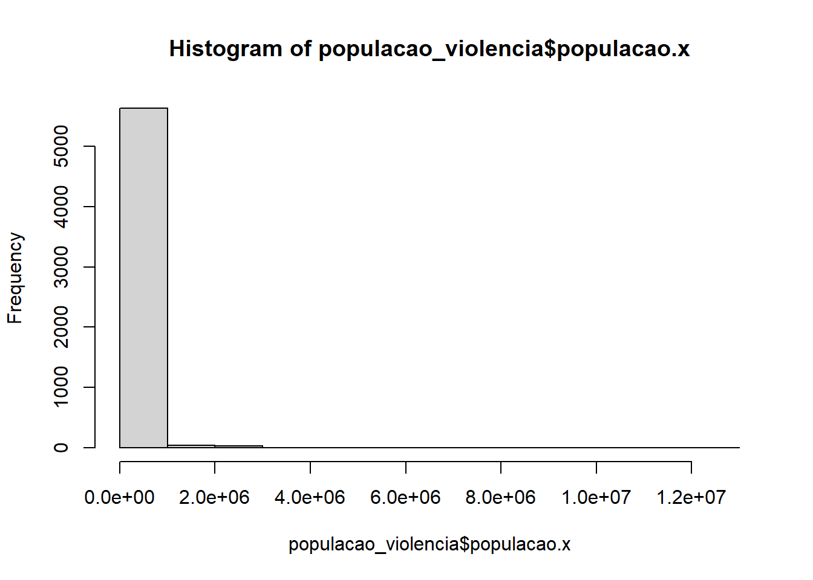

ano_nascimento <- 2001
ano_atual <- 2025
minha_idade <- ano_atual - ano_nascimento
print(paste("Minha idade é:", minha_idade, "anos"))[1] "Minha idade é: 24 anos"R Básico
Livro: Usando R: Uma introdução para pesquisadores em Humanidades Digitais, de Fernando Meireles e Denisson Silva
Link: https://fmeireles.com/livro/
Crie um objeto chamado meu_ano_nascimento e salve nele o ano do seu nascimento. Em seguida, crie um objeto chamado ano_atual e salve nele o ano atual. Por fim, crie um objeto chamado minha_idade e atribua a ele a diferença entre ano_atual e meu_ano_nascimento. Use o console para visualizar o valor de minha_idade.
Instanciamos uma variável com o meu ano de nascimento e com o ano atual e, tirando a diferença entre as duas datas, obtemos a minha idade.
ano_nascimento <- 2001
ano_atual <- 2025
minha_idade <- ano_atual - ano_nascimento
print(paste("Minha idade é:", minha_idade, "anos"))[1] "Minha idade é: 24 anos"Crie um vetor chamado notas com cinco valores que representam notas que você recebeu em algum curso ou disciplina (use valores de 0 a 10). Calcule a média das notas usando a função mean() e salve o resultado em um objeto chamado media_notas.
Supondo que eu tenha tirado as seguintes notas em um determinado curso, tiramos a média usando a função mean(x) do R.
notas <- c(2, 4, 6, 8, 10)
media_notas <- mean(notas)
print(paste("Minha média foi:", media_notas))[1] "Minha média foi: 6"Por que o código abaixo não funciona?
my_variable <- 10 my_varıable
O código não funciona por conta de uma diferença na escrita entre a variável atribuída na primeira linha e a variável que estamos tentando printar na segunda linha. Mais especificamente, há um typo da letra “i”.
Crie um objeto chamado meu_nome e salve nele o seu nome como um texto (lembre-se de usar aspas). Em seguida, use a função a paste() para criar uma frase que diga “Meu nome é [meu_nome]”, substituindo [meu_nome] pelo objeto recém criado.
A função paste permite combinar texto e o valor guardado em variáveis. Com isso, é possível printar elementos da seguinte maneira:
meu_nome <- "Felipe Marques Esteves Lamarca"
print(paste("Meu nome é", meu_nome))[1] "Meu nome é Felipe Marques Esteves Lamarca"Primeiro, vamos importar os pacotes necessários para a realização das tarefas.
library(tidyverse)
library(haven)
library(readxl)Carregue o arquivo governadores.csv, que contém informações de algumas pessoas fictícias, e salve seu conteúdo no objeto pessoas. Depois de carregado os dados, use a função head para pré-visualizar as primeiras linhas do data.frame. Use comentários para explicar como você descobriu a forma correta de carrergar o arquivo.
Primeiro, importamos os dados usando a função read_csv2, encontrada na internet a partir de uma rápida busca: https://livro.curso-r.com/13-2-importa%C3%A7%C3%A3o.html. A função é útil no caso em que desejamos der arquivos .csv separados por “;”. É claro, poderíamos ter utilizando também a função read_delim. Depois é só aplicar a função head para observar as primeiras 5 linhas.
# https://livro.curso-r.com/13-2-importa%C3%A7%C3%A3o.html
pessoas <- read_csv2("datasets/governadores.csv")
head(pessoas)# A tibble: 6 × 5
uf candidatura partido pct_gastos pct_votos
<chr> <chr> <chr> <dbl> <dbl>
1 GO GUSTAVO MENDANHA MELO PATRIOTA 26.8 25.2
2 GO RONALDO RAMOS CAIADO UNIÃO 38.6 51.8
3 GO WOLMIR THEREZIO AMADO PT 4.02 6.98
4 GO VITOR HUGO DE ARAUJO ALMEIDA PL 28.9 14.8
5 MG ALEXANDRE KALIL PSD 33.8 35.1
6 MG CARLOS ALBERTO DIAS VIANA PL 15.6 7.23É comum que dados de pesquisas de opinião, i.e. surveys, sejam armazenados em arquivos SPSS ou Stata, criados pelos softwares de mesmo nome. Neste exercício, sua tarefa será carregar um arquivo um Stata com dados da pesquisa do World Values Survey, principal fonte de dados sobre valores, crenças e comportamentos das populações de diferentes países. Os dados do Brasil estão no arquivo wvs.dta. Carregue o arquivo salve os resultados no objeto wvs_stata.
Link para os dados: https://www.worldvaluessurvey.org/WVSDocumentationWV7.jsp
Para ler bancos de dados .dta, basta instalar o pacote haven e importar o arquivo usando a função abaixo:
wvs_stata <- haven::read_dta("datasets/WVS_Cross-National_Wave_7_stata_v6_0.dta")Diferentes órgãos públicos no Brasil disponibilizam seus microdados administrativos para acesso. Um deles é o INEP, que tem uma página dedicada para download de bases de dados com informações sobre os exames e pesquisas que conduz.
Neste exercício, sua tarefa será obter e carregar no R alguns microdados do Censo da Educação Superior de 2022, levantamento anual do INEP que coleta informações sobre as instituições de ensino superior, cursos de graduação e estudantes no Brasil todo. Os dados que deverão ser baixados são os referentes ao ano de 2022, que poderão ser baixados da página do INEP. Os dados estão em formato compactado (zipado) e deverão ser descompactados no diretório local do R antes de serem carregados. Uma vez descompactados, carregue o arquivo MICRODADOS_ED_SUP_IES_2022.CSV e salve o resultado no objeto alunos. Reporte o código e o seguinte:
Link para os dados: https://www.gov.br/inep/pt-br/acesso-a-informacao/dados-abertos/microdados/censo-da-educacao-superior
Neste caso usamos a função read_delim para fazer a leitura dos dados. Além disso, foi importante especificar o encoding do dataset. Os nomes das colunas podem ser obtidos pela função colnames, enquanto número de linhas e colunas podem ser obtidos usando as funções nrow e ncol, respectivamente.
alunos <- read_delim("datasets/MICRODADOS_ED_SUP_IES_2022.CSV",
delim=";",
locale=locale(encoding = "latin1"))
# resposta da letra a)
print(colnames(alunos)) [1] "NU_ANO_CENSO" "NO_REGIAO_IES"
[3] "CO_REGIAO_IES" "NO_UF_IES"
[5] "SG_UF_IES" "CO_UF_IES"
[7] "NO_MUNICIPIO_IES" "CO_MUNICIPIO_IES"
[9] "IN_CAPITAL_IES" "NO_MESORREGIAO_IES"
[11] "CO_MESORREGIAO_IES" "NO_MICRORREGIAO_IES"
[13] "CO_MICRORREGIAO_IES" "TP_ORGANIZACAO_ACADEMICA"
[15] "TP_CATEGORIA_ADMINISTRATIVA" "NO_MANTENEDORA"
[17] "CO_MANTENEDORA" "CO_IES"
[19] "NO_IES" "SG_IES"
[21] "DS_ENDERECO_IES" "DS_NUMERO_ENDERECO_IES"
[23] "DS_COMPLEMENTO_ENDERECO_IES" "NO_BAIRRO_IES"
[25] "NU_CEP_IES" "QT_TEC_TOTAL"
[27] "QT_TEC_FUNDAMENTAL_INCOMP_FEM" "QT_TEC_FUNDAMENTAL_INCOMP_MASC"
[29] "QT_TEC_FUNDAMENTAL_COMP_FEM" "QT_TEC_FUNDAMENTAL_COMP_MASC"
[31] "QT_TEC_MEDIO_FEM" "QT_TEC_MEDIO_MASC"
[33] "QT_TEC_SUPERIOR_FEM" "QT_TEC_SUPERIOR_MASC"
[35] "QT_TEC_ESPECIALIZACAO_FEM" "QT_TEC_ESPECIALIZACAO_MASC"
[37] "QT_TEC_MESTRADO_FEM" "QT_TEC_MESTRADO_MASC"
[39] "QT_TEC_DOUTORADO_FEM" "QT_TEC_DOUTORADO_MASC"
[41] "IN_ACESSO_PORTAL_CAPES" "IN_ACESSO_OUTRAS_BASES"
[43] "IN_ASSINA_OUTRA_BASE" "IN_REPOSITORIO_INSTITUCIONAL"
[45] "IN_BUSCA_INTEGRADA" "IN_SERVICO_INTERNET"
[47] "IN_PARTICIPA_REDE_SOCIAL" "IN_CATALOGO_ONLINE"
[49] "QT_PERIODICO_ELETRONICO" "QT_LIVRO_ELETRONICO"
[51] "QT_DOC_TOTAL" "QT_DOC_EXE"
[53] "QT_DOC_EX_FEMI" "QT_DOC_EX_MASC"
[55] "QT_DOC_EX_SEM_GRAD" "QT_DOC_EX_GRAD"
[57] "QT_DOC_EX_ESP" "QT_DOC_EX_MEST"
[59] "QT_DOC_EX_DOUT" "QT_DOC_EX_INT"
[61] "QT_DOC_EX_INT_DE" "QT_DOC_EX_INT_SEM_DE"
[63] "QT_DOC_EX_PARC" "QT_DOC_EX_HOR"
[65] "QT_DOC_EX_0_29" "QT_DOC_EX_30_34"
[67] "QT_DOC_EX_35_39" "QT_DOC_EX_40_44"
[69] "QT_DOC_EX_45_49" "QT_DOC_EX_50_54"
[71] "QT_DOC_EX_55_59" "QT_DOC_EX_60_MAIS"
[73] "QT_DOC_EX_BRANCA" "QT_DOC_EX_PRETA"
[75] "QT_DOC_EX_PARDA" "QT_DOC_EX_AMARELA"
[77] "QT_DOC_EX_INDIGENA" "QT_DOC_EX_COR_ND"
[79] "QT_DOC_EX_BRA" "QT_DOC_EX_EST"
[81] "QT_DOC_EX_COM_DEFICIENCIA" # resposta da letra b)
print(paste("O número de linhas é", nrow(alunos)))[1] "O número de linhas é 2595"print(paste("O número de colunas é", ncol(alunos)))[1] "O número de colunas é 81"No Google Classroom (Aula 2 Mural - https://classroom.google.com/c/NzQ4Mzk4MTMyMDU3), há um arquivo chamado base_municipios_brasileiros.xlsx com informações dos municípios brasileiros. Este banco possui mais de 400 variáveis. Crie um novo data.frame, selecionando apenas variáveis referentes a identificação do município, ano, população e pib. Descreva o processo e justifique suas escolhas.
Infelizmente o arquivo .xlsx continha algum problema de formato, o que impediu que eu conseguisse abri-lo mesmo localmente no Excel. Por isso, utilizou-se o arquivo .csv. A seleção das colunas foi feita utilizando a função select.
base_municipios_brasileiros <- read_csv("datasets/base_municipios_brasileiros.csv")
base_municipios_brasileiros <- base_municipios_brasileiros %>%
select("id_municipio", "nome_municipio", "ano", "populacao", "pib")Utilize o banco de dados do exercício anterior para criar um novo objeto/data.frame chamado populacao. Faça o filtro para selecionar somente informações de 2022, criando um novo data.frame. E, a partir dele, crie um novo objeto chamado maiores_populacoes contendo apenas os 50 municípios mais populados do país, ordenados de forma decrescente. Use comentários para indicar qual é o 50º município mais populoso do país.
Primeiro, filtramos apenas a população de 2022 usando a função filter. Depois, bastou ordenar os municípios em ordem decrescente compondo as funções arrange e desc, e tomar as 50 primeiras linhas. Depois utilizamos a função tail para mostrar a última linha – isto é, a linha correspondente ao 50º município mais populoso.
populacao <-base_municipios_brasileiros %>%
filter(ano == 2022)
maiores_populacoes <- populacao %>%
arrange(by=desc(populacao)) %>%
head(50)
print(tail(maiores_populacoes, 1))# A tibble: 1 × 5
id_municipio nome_municipio ano populacao pib
<dbl> <chr> <dbl> <dbl> <dbl>
1 1100205 Porto Velho 2022 461748 NAUsando o objeto populacao, criado no exercício anterior, adicione a ele uma nova variável chamada pequeno_porte. Nesta, constará os valores: Pequeno porte, para municípios com menos de 50 mil habitantes, e Outros para os demais municípios.
Combinando as funções mutate e case_when, conseguimos criar a coluna pequeno_porte.
populacao <- populacao %>%
mutate(pequeno_porte = case_when(
populacao < 50000 ~ "Pequeno porte",
TRUE ~ "Outros"
)
)Carregue a base de dados banco_violencia.xlsx. A partir da função left_join, crie uma nova base cruzando essa base com o objeto populacao, criado anteriormente. Descreva quais as variáveis que são utilizadas para o cruzamento e por quê.
Podemos facilmente cruzar os dois bancos de dados utilizando a coluna id_municipio, presente nos dois datasets. Por se tratar de uma coluna padronizada, a variável de id é muito útil para realizar conexões entre os bancos de dados.
banco_violencia <- read_excel("datasets/banco_violencia.xlsx")
banco_violencia$id_municipio <- as.double(banco_violencia$id_municipio)
populacao_violencia <- left_join(x=populacao, y=banco_violencia, by=c("id_municipio"))Usando o banco de dados criado no exercício anterior, crie duas visualizações:
um histograma da população brasileira dividida por municípios
um gráfico com duas barras comparando o número de municípios de pequeno porte e municípios de outros tamanhos
O que esses dois gráficos revelam sobre o caráter geral dos municípios brasileiros?
Dica: consulte o livro Usando o R para identificar os geoms mais adequados
hist(populacao_violencia$populacao.x)
populacao_violencia %>%
group_by(pequeno_porte) %>%
summarise(n_municipios = n()) %>%
ggplot(aes(x = pequeno_porte, y = n_municipios)) +
geom_col()Os dois gráficos plotados nos mostram que a esmagadora maioria dos municípios brasileiros são de pequeno porte – isto é, possuem menos de 50 mil habitantes.
Novamente usando o banco violencia, crie uma visualização que mostre a evolução do número absoluto de mortes por intervenção policial no município do Rio de Janeiro ao longo dos anos.
Dica 1: para facilitar seu trabalho, você pode criar um novo banco contendo apenas as informações do município de interesse para o gráfico usando a função de manipulação filter()
Dica 2: verifique se a classe das variáveis utilizadas é numérica. Caso não seja, faça a conversão usando a função mutate()
Após filtrar os dados para o município do Rio de Janeiro, podemos usar a coluna quantidade_mortes_intervencao_policial (transformada em uma variável numérica através da função mutate) para plotar um gráfico de série temporal.
banco_violencia %>%
filter(id_municipio_nome == 'Rio de Janeiro') %>%
mutate(quantidade_mortes_intervencao_policial = as.numeric(quantidade_mortes_intervencao_policial)) %>%
ggplot(aes(x = ano, y = quantidade_mortes_intervencao_policial, group=1)) +
geom_line() +
geom_point()Novamente usando o banco do exercício 11, crie um novo banco contabilizando a população por estado. Em seguida, crie um mapa que permita visualizar o tamalho da população de cada estado.
Dica 1: para a manipulação, use as funções group_by() e sumarise(), descritas no capítulo 3 do livro Usando R.
Dica 2: para a elaboração do mapa, será necessário utilizar os pacotes geobr e sf
Começamos lendo os dados de geometria dos estados brasileiros utilizando o geobr. Daí, basta agrupar os dados por unidade da federação, somando o total da população, e cruzar as bases pela sigla do estado. O gráfico é plotado utilizando a geometria sf.
library(geobr)
library(sf)
coordenadas_estados <- read_state()
populacao_violencia %>%
group_by(sigla_uf) %>%
summarise(total_populacao = sum(populacao.x)) %>%
left_join(coordenadas_estados, by = c("sigla_uf" = "abbrev_state")) %>%
st_as_sf() %>%
ggplot(aes(fill = total_populacao)) +
geom_sf()Selecione um dos gráficos elaborados nos exercícios anteriores e faça customizações nele. Você pode mudar cores, temas, acrescentar títulos, mudar nomes de variáveis… deixe sua criatividade fluir, mas sempre priorizando a clareza e a melhor forma de comunicar as informações contidas no gráfico.
Faço algumas modificações ao gráfico de linha anterior. Em especial, ajusto o eixo \(y\) para começar no 0, o que ajusta a analisar de maneira mais adequada a variação no número de mortes ao longo do tempo. Além disso, incluo também título, subtítulo e caption, além de alguns ajustes mais residuais no tamanho e estilo da fonte. Alterei também o titulo dos eixos para facilitar a compreensão das variáveis.
banco_violencia %>%
filter(id_municipio_nome == 'Rio de Janeiro') %>%
mutate(quantidade_mortes_intervencao_policial = as.numeric(quantidade_mortes_intervencao_policial)) %>%
ggplot(aes(x = ano, y = quantidade_mortes_intervencao_policial, group = 1)) +
geom_line(color = "steelblue") +
geom_point(color = "steelblue") +
scale_y_continuous(expand = c(0, 0), limits = c(0, 800)) +
labs(
title = "Mortes por Intervenção Policial no Rio de Janeiro por Ano",
subtitle = "Dados do Instituto de Segurança Pública",
caption = "Produzido por Felipe Lamarca",
x = "Ano",
y = "Quantidade de Mortes"
) +
theme_bw() +
theme(
plot.title = element_text(size = 14, face = "bold"),
axis.title.x = element_text(size = 12),
axis.title.y = element_text(size = 12),
axis.text.x = element_text(size = 10),
axis.text.y = element_text(size = 10)
)